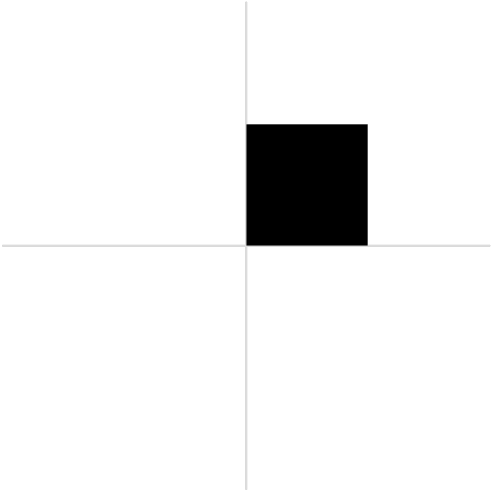
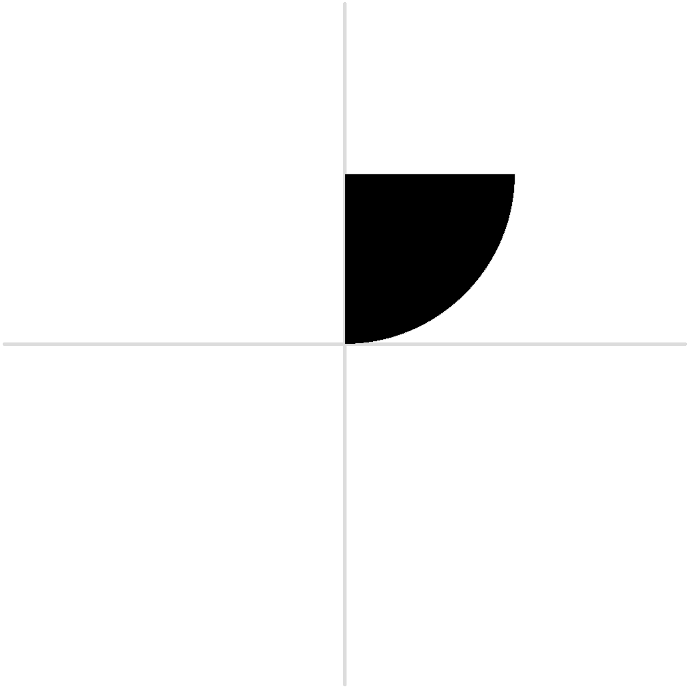
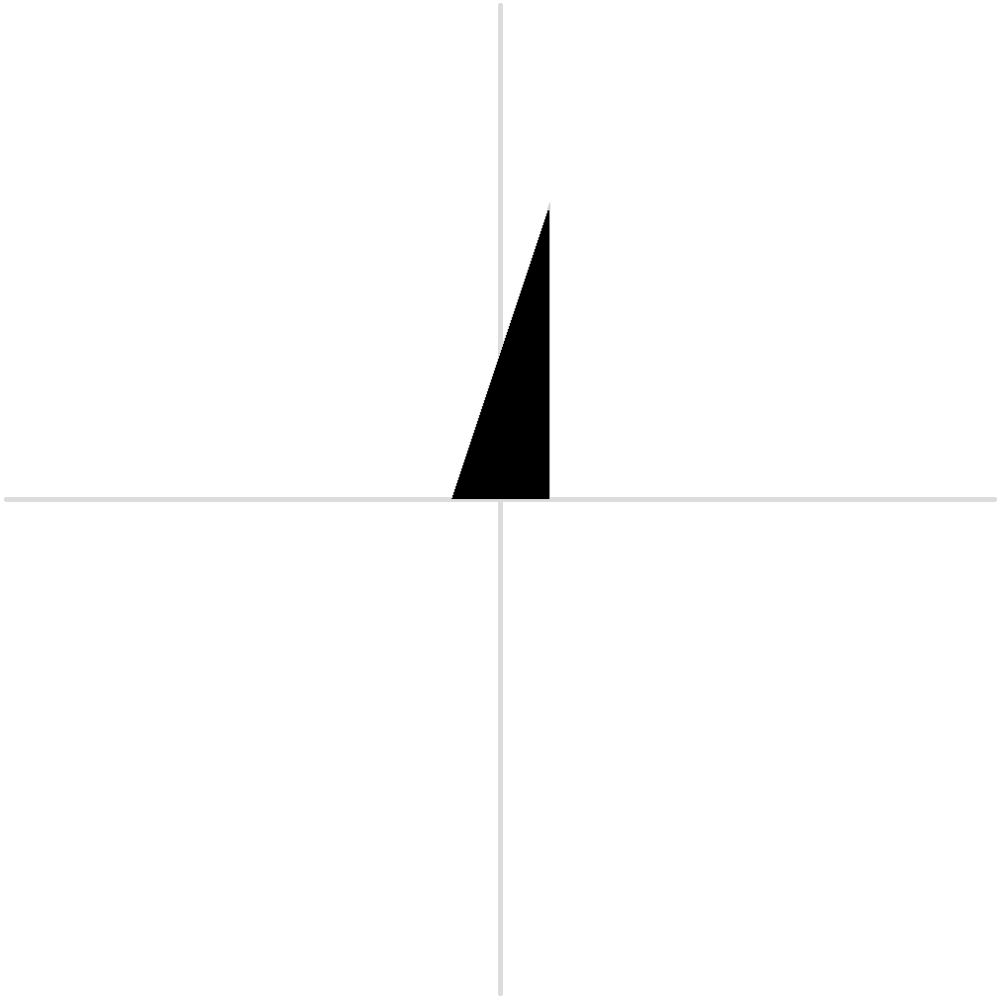
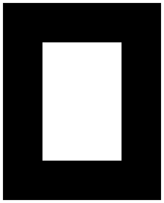

6 Parametric fonts and font macros
| (require sfont/parametric) | package: sfont |
The modules described above are useful for reading, modifying and inspecting fonts. However, to define new fonts sfont has macros tha should be easier to use.
6.1 Bezier paths
Instead of writing a bezier path point by point the macro ~ is provided, we will discuss how to use it with examples:
syntax
(~ path-element ...)
The simplest use is equivalent to specify a cubic bezier point by point
> (~ (0 0) (55 0) (45 100) (100 100)) (list (vec 0 0) (vec 55 0) (vec 45 100) (vec 100 100))
A line is expressed with a double hyphen, -- (from now on the bezier paths will be printed with print-beziers):
> (print-beziers (~ (0 0) -- (500 0) -- (500 500) -- (0 500) -- (0 0))) 
To close the path, instead of repeating the firt point it is possible to use the cycle command:
> (print-beziers (~ (0 0) -- (500 0) -- (500 500) -- (0 500) -- cycle))

> (print-beziers (~ (0 0) -- (@ 500 0) -- (@ 0 500) -- (@ -500 0) -- cycle))
> (print-beziers (~ (0 0) -- (@° 0 500) -- (@° (* pi 2/3) 500) -- cycle))

> (print-beziers (~ (0 0) (500 0 0.55) (500 500) -- (0 500) -- cycle)) 
where control points are obtained interpolating between (0 0) and (500 0) (with an interpolation factor 0.55) and between (500 500) and (500 0);
> (define b1 (~ (100 0) -- (100 600)))
> (print-beziers (~ (-100 0) (insert b1) cycle)) 
6.2 Glyphs and Fonts
syntax
(glyph. name maybe-locals [metrics left-form right-form] [contours contour ...] [components component ...])
syntax
(component. base)
(component. base (sx sxy syx sy ox oy))
syntax
(font. name [alignments alignment-form ...] maybe-variables [glyphs glyph-form ...])
(font. (name (args default-value) ...) [alignments alignment-form ...] maybe-variables [glyphs glyph-form ...] maybe-spacing)
> (pict-convert (glyph. 'o [locals (weight 100) (width 400) (height 500)] [metrics 20 20] [contours (~ (0 0) -- (@ width 0) -- (@ 0 height) -- (@ (- width) 0) -- cycle) (~ (weight weight) -- (@ 0 (- height (* 2 weight))) -- (@ (- width (* 2 weight)) 0) -- (@ 0 (- (* 2 weight) height)) -- cycle)])) 
Fonts can be defined in two ways: the first one creates a font, the second produces an anonymous procedure that can be called with the arguments defined and that produces a font.
(define f (font. (squarefont (weight 100) (width 200)) ...))
f can be called with keyword arguments (f #:weight 120 #:width 210).
The body of the font can then use weight and width to create new fonts.
The creation of parametric fonts can then be made easier since the designer decide which ’parameter’ will be exposed, while other ’hidden’ variables can be defined in the maybe-variables part.
A complex example taken from the sfont-examples collection:
(define sq (font. (squarefont [x-height 500] [width 0.5] [weight 0.5]) (alignments [base 0 -10] [xh x-height 10] [desc* (/ (- x-height 1000) 2) 0 :font-descender] [asc* (- x-height (alg desc*)) 0 :font-ascender] [dsc (+ (alg desc*) 10) -10] [ascender (- (alg asc*) 10) 10]) (variables [gw (* 1000 width)] [v-stem (* x-height weight 0.333)] [h-stem (* v-stem 0.9)] [space (/ (- gw (* 2 v-stem)) 2)] [x1 space] ...) (glyphs (glyph. 'a (metrics space space) [contours a-cnt]) (glyph. 'b (metrics space (/--/ (+ gw space space))) [contours (rect x1 y1 v-stem (alg ascender)) (rect x1 y1 gw x-height) (reverse (rect (+ x1 v-stem) (+ y1 h-stem) (- gw (* 2 v-stem)) (- x-height (* 2 h-stem))))]) ...)))
Alignments are given in the form [name position overshoot-height], to get the values back the procedures alg, ovs, ovs-height, are defined:
value
procedure
a : alignment/c
procedure
a : alignment/c
procedure
(ovs-height a) → real?
a : alignment/c
6.3 Other functions and macros
procedure
(remove~ pt rm ...)
→ (listof (and/c closed-bezier/c cubic-bezier/c)) pt : (and/c closed-bezier/c cubic-bezier/c) rm : (and/c closed-bezier/c cubic-bezier/c)
procedure
(join~ pt pts ...)
→ (listof (and/c closed-bezier/c cubic-bezier/c)) pt : (and/c closed-bezier/c cubic-bezier/c) pts : (and/c closed-bezier/c cubic-bezier/c)
syntax
(translate. o arg tx ty)
(translate. o from (x y) arg tx ty)
syntax
(rotate. o arg angle)
(rotate. o from (x y) arg angle)
syntax
(scale. o arg fx [fy fx])
(scale. o from (x y) arg fx [fy fx])
syntax
(skew-x. o arg angle)
(skew-x. o from (x y) arg angle)
syntax
(skew-y. o arg angle)
(skew-y. o from (x y) arg angle)
syntax
(reflect-x. o arg)
(reflect-x. o from (x y))
syntax
(reflect-y. o arg)
(reflect-y. o from (x y) arg)